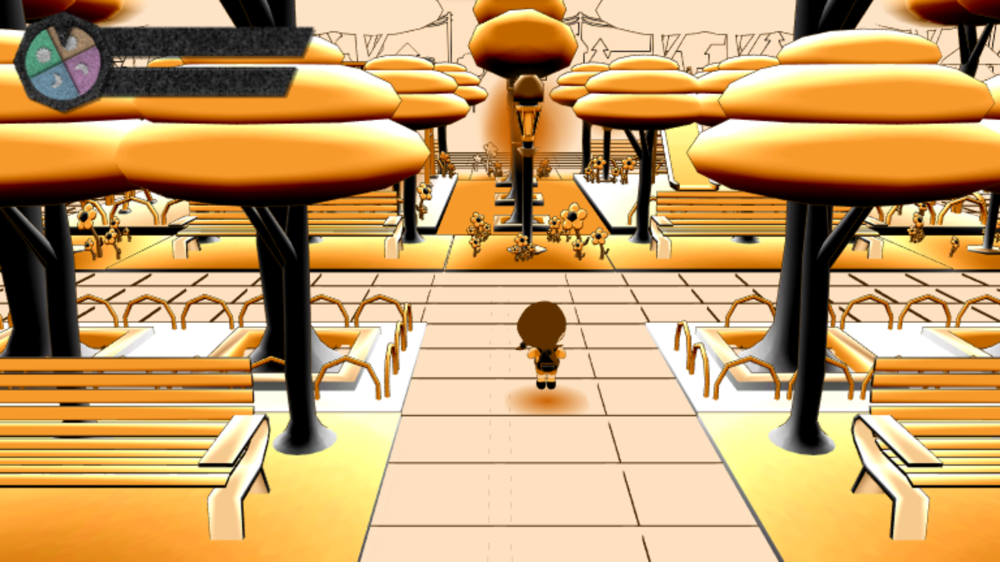
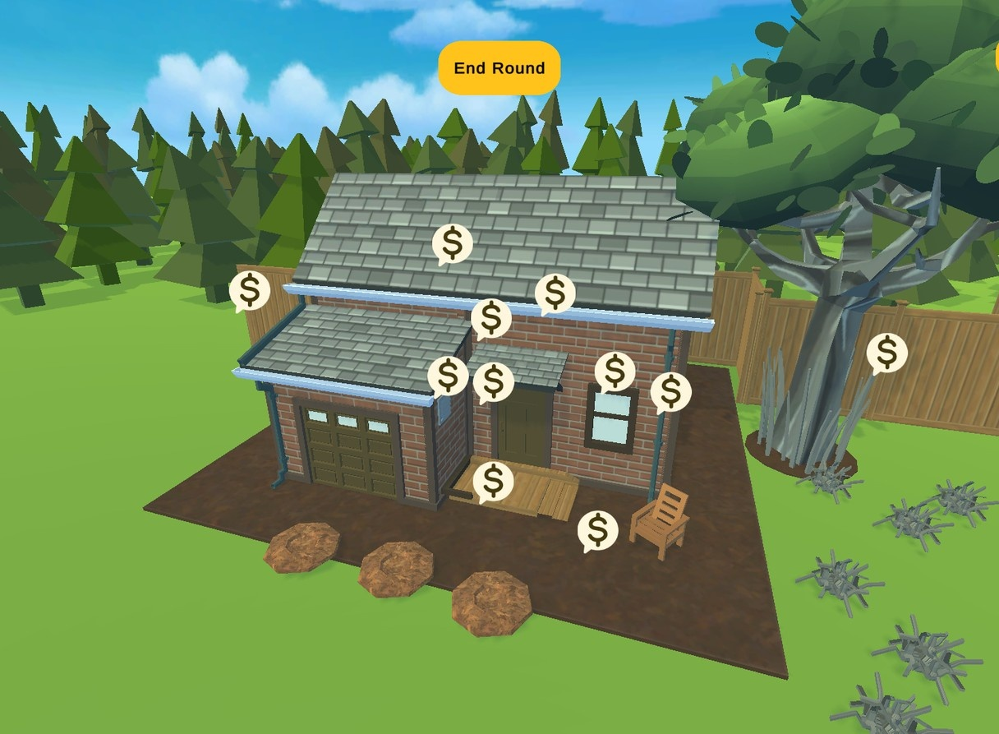
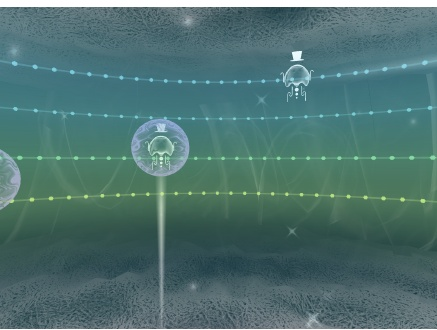

Collaborative reasoning
How roles, shared resources, information asymmetries, and communication constraints affect the way people reason and make decisions together.
Research · Games · HCI · Interactive Systems
I am Your Name, a researcher working across human-computer interaction, games, digital media, and interactive technology. My work combines design, prototyping, and empirical research to understand how interaction can support collaboration and collective reasoning.
About
My work sits at the intersection of game design, digital arts, and HCI. I completed my PhD at Lancaster University and later worked as a postdoctoral researcher at UC Santa Cruz, where I contributed to NSF-funded research on serious games and community resilience. I remain a member of the Game User Interaction and Intelligence Lab (GUII Lab), working with Professor Magy Seif El-Nasr. I regularly publish and review for venues in games and HCI, and I also serve as an Associate Editor for IEEE Transactions on Games. I’m particularly interested in how interactive systems shape creativity, learning, collaboration, and decision-making.
Meu trabalho está na interseção entre game design, artes digitais e IHC. Concluí meu PhD na Lancaster University e depois atuei como pesquisador de pós-doutorado na UC Santa Cruz, onde contribuí para pesquisas financiadas pela NSF sobre serious games e resiliência comunitária. Continuo como membro do Game User Interaction and Intelligence Lab (GUII Lab), trabalhando com a Professora Magy Seif El-Nasr. Publico e atuo regularmente como revisor em venues de games e IHC, e também sou Associate Editor do IEEE Transactions on Games. Tenho especial interesse em como sistemas interativos moldam criatividade, aprendizagem, colaboração e tomada de decisão.
Research
How roles, shared resources, information asymmetries, and communication constraints affect the way people reason and make decisions together.
How serious and applied games can create meaningful spaces for learning, preparedness, public engagement, and community resilience.
How immersive, multimodal, and intelligent interactive systems can be designed while remaining attentive to human interpretation, agency, and collaboration.
Selected projects

Art Game · Computational Creativity
An art game in which movement through a virtual environment implicitly contributes to the emergence of musical structures.

Serious Games · HCI · Discourse Analysis
Research on how player discourse, negotiation, and shared decision-making unfold in serious games for wildfire preparedness and community resilience.

VR · Interactive Musical System
A virtual-reality musical instrument that uses visual interaction and meta-interactivity to support non-experts in creating coherent musical pieces.
Selected publications
Mário Escarce, M. J. Johns, Shivam Shukla, Darian Lee, et al.
Foundations of Digital Games · FDG 2026
M. J. Johns, Mário Escarce, Alison Crosby, Yiyang Lu, et al.
Proceedings of the ACM on Human-Computer Interaction · CHI PLAY 2025
Sai Siddartha Maram, Yash Malegaonkar, Niveditha Dudyala, Mário Escarce, Magy Seif El-Nasr
ACM Designing Interactive Systems Conference · DIS 2025
Mário Escarce, M. J. Johns, Shivam Shukla, Darian Lee, et al.
Joint Conference on Serious Games · JCSG 2025
M. J. Johns, Yael Nidam, Mário Escarce, Linda Hirsch, et al.
CHI Conference on Human Factors in Computing Systems · CHI EA 2025
M. J. Johns, Emmanuel Ezenwa Jr., Seunghyun Lee, Thomas Maiorana, et al.
CHI Conference on Human Factors in Computing Systems · CHI EA 2024
Mário Escarce, Georgia Rossmann Martins, Leandro Soriano Marcolino, Elisa Rubegni
Proceedings of the ACM on Human-Computer Interaction · CHI PLAY 2023
Mário Escarce
CHI Conference on Human Factors in Computing Systems · CHI EA 2022
Mário Escarce, Georgia Rossmann Martins, Leandro Soriano Marcolino, Elisa Rubegni
Proceedings of the ACM on Human-Computer Interaction · CHI PLAY 2021
Contact